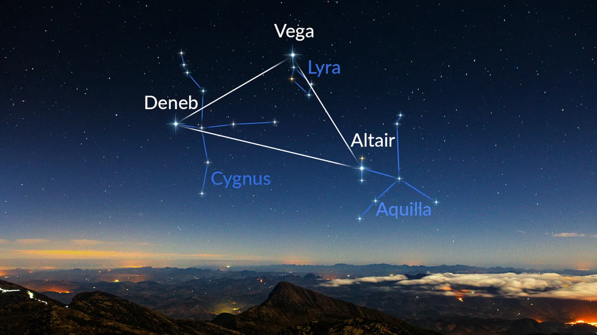

LETNÍ TROJÚHELNÍK
Letní trojúhelník je asterismus tvořený hvězdami Deneb, Vega a Altair. Deneb je součástí souhvězdí Labutě, Vega zase Lyry a Altair patří do souhvězdí Orla. Letní se mu říká proto, že je nejlépe pozorovatelný v létě na severní polokouli. Všechny tři hvězdy tvořící letní trojúhelník patří mezi 57 tradičních navigačních hvězd.
